Впечатления после использования iPhone 12 Pro Max: от любви до ненависти
Что же могло пойти не так.
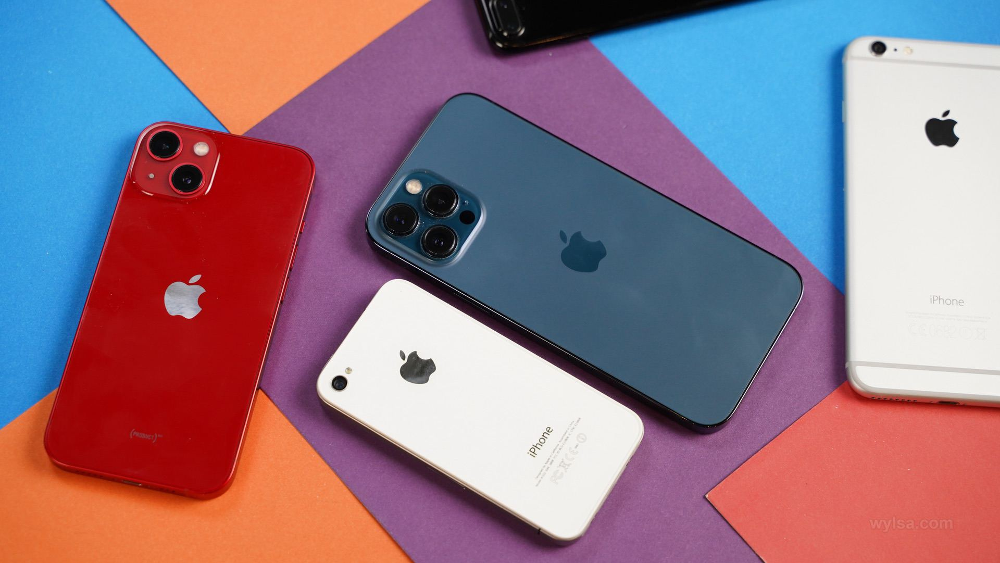
После выхода нового iPhone 13 Pro Max прошлогодний флагман автоматически потерял титул топового айфона. iPhone 12 Pro Max пропал из ассортимента фирменного интернет-магазина Apple, однако он по-прежнему продаётся и можно найти как новые устройства, так и бэушные телефоны. За айфонами и другими гаджетами мы обращаемся к нашим друзьям в магазин Big Geek, оставлю ссылочку.
Хочу поделиться впечатлениями, которые остались после использования этого телефона на протяжении полугода. Для начала небольшая предыстория.
С чего всё начиналось
Первым по-настоящему большим айфоном в моём пользовании был iPhone 6 Plus — он запомнился и новым форматом, и совсем свежим дизайном, и резким скачком цен в России вскоре после старта продаж. Хорошо помню, как успел оплатить предзаказ по одной цене, получил телефон, а последующие партии были уже намного дороже — вовсю бушевал кризис конца 2014 года. Затем я сменил его на iPhone 6s Plus, тот ничего примечательного в памяти не оставил, а затем я перешёл на iPhone 7 Plus. Мне он очень нравился, телефон дожил до наших дней — периодически заряжаю его, заодно использую как реквизит для съёмок.
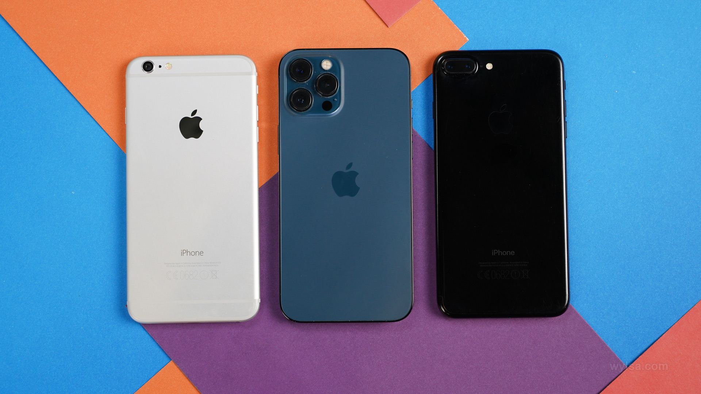
Потом у Apple пошли небольшие очень удобные устройства: iPhone X, XS, 11 Pro. Зачем мучать себя огромным телефоном, если можно купить маленький? У меня был такой ход мыслей, поэтому я и не смотрел на модели с увеличенными размерами экрана и батарейки. Вы же помните, что начиная с XS Max у Apple появились айфоны царь-формата.
И тут в середине 2021 года я понял, что хочется чего-то нового. Что iPhone 12 и 11 Pro работают недостаточно долго и хочется пользоваться телефоном, который выдерживает сутки использования и не просится на зарядку уже во второй половине дня. Таким образом я переехал на iPhone 12 Pro Max.
Размеры
Телефон максимально здоровый, а если ещё и чехол на него надеть, то первое время можно ходить и охать, удивляясь неприлично большим размерам 12 Pro Max. Но ко всему привыкаешь, и уже через пару дней телефон ощущается совершенно обычным, нормальным — и это очень странное чувство.
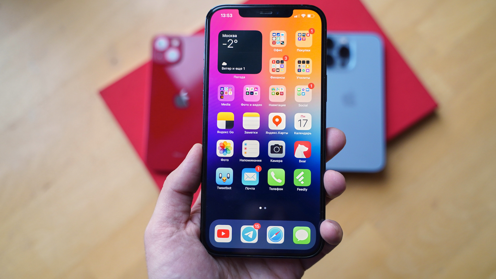
Что не прикольно, так это здоровый выступающий блок с камерами: если не пользоваться чехлом, то телефон качается на поверхности, пока лежит экраном вверх. Ну и пыль собирается тоже очень быстро вокруг этой области. К слову, после выхода 13 Pro Max, где блок камер ещё больше, проблема только усугубилась.
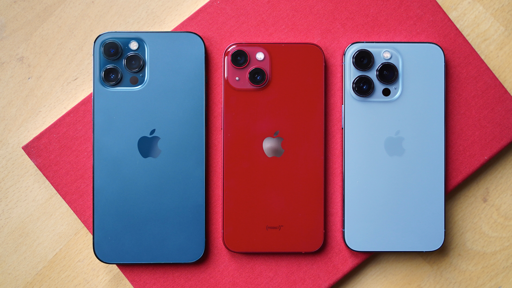
Летом крупные размеры большого айфона дают о себе знать. В те дни, когда ходишь в куртке или лёгкой жилетке, а телефон лежит в кармане, то и не особо мешается. А вот когда надеваешь шорты, тогда айфон формата XXL приходится носить в руке — он даже не во все карманы помещается. Вообще, с iPhone 12 Pro Max начинаешь ценить небольшие сумки — иначе с телефоном становится некомфортно. На этом хочется сделать акцент: летом, когда хочется ходить налегке, к большому устройству возникают вопросы.
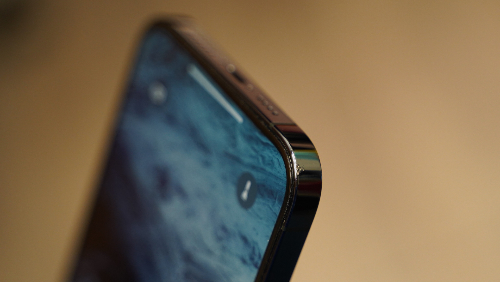
К качеству материалов и сборки вопросов нет. Телефон эксплуатировался без чехла, не считая небольшого промежутка, когда экспериментировал с аксессуарами. На корпусе есть пара небольших отметин, когда телефон упал уже не помню при каких обстоятельствах в помещении. Но в остальном как новенький.
Красивый цвет
Я люблю синий цвет и рад, что Apple добавила его в прошлом сезоне — Space Grey уже приелся, золотистый совсем не мой вариант, ещё очень универсальным получился белый цвет. Пожалуй, это самый красивый цвет по сей день, он даже лучше, чем Sierra Blue. Стальные глянцевые рамки все ругают за маркость, в этом плане обычный iPhone 12 или 13 с боковинами из алюминия более приятный — они не пачкаются. Зато глянцевая задняя поверхность более маркая, в 12 Pro же, наоборот, на ней не видны отпечатки.
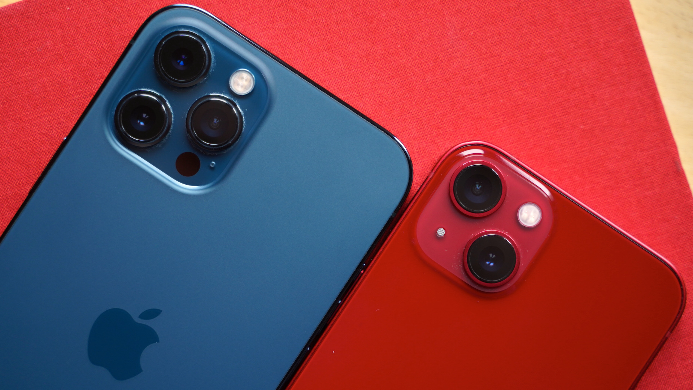
Снова про размеры и немного про экран
Мне телефон с большим экраном нужен для работы, иначе я бы уже давно ходил с iPhone 12 mini, но маленький айфон не подходит по сценарию использования.
Обратная сторона — это размеры сильно выше средних, но за универсальность всегда приходится чем-то расплачиваться. Например, попробовал носить телефон в чехле, хоть я их очень не люблю. Но айфон тяжёлый и большой, а ещё широкий, поэтому с непривычки решил не экспериментировать с судьбой и засунул его в оригинальный прозрачный чехол MagSafe. Несколько раз вынимал из него телефон, как итог — трещина на чехле спустя неделю. Не рассчитан кейс на то, что устройство будут эпизодически извлекать, учтите.
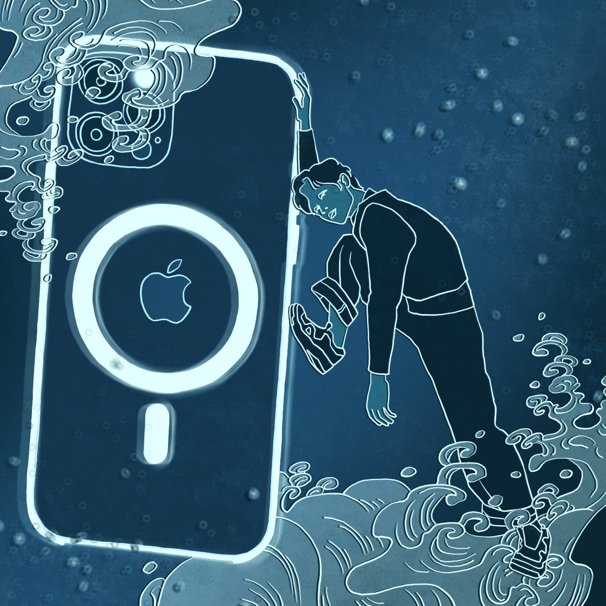
Ещё я не хотел клеить защитное стекло. В итоге посмотрел, с какой скоростью убился экран на iPhone 12 при обычном использовании без жёстких экспериментов, и понял, что всё-таки защита не повредит. Благо современные стёкла очень тонкие и смотрятся аккуратно, практически незаметны, при этом ещё и прочные.
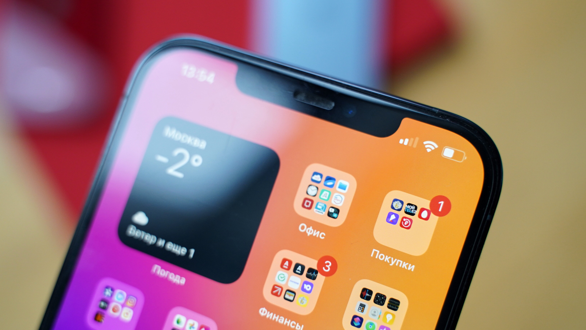
В обзорах периодически проскакивает мысль, что айфон странно смотрится со своим вырезом и отсутствием 120 Гц, тем более когда речь идёт о топовом устройстве за сто с лишним тысяч рублей. Кому как, я на это внимание вообще не обращаю, вопрос привычки.
Мне больше досаждает тот факт, что в iOS нельзя разместить иконки в нижней части экрана, они по умолчанию группируются сверху вниз. Из-за этого здоровенным экраном не удобно пользоваться одной рукой при работе с приложениями. Вот это реально проблема, а отсутствие 120 Гц не смутило — такую частоту обновления добавили в новый iPhone 13 Pro. Не могу сказать, что от функции в восторге и она как-то меняет ощущения от телефона. Есть — хорошо, нет — тоже без страданий.
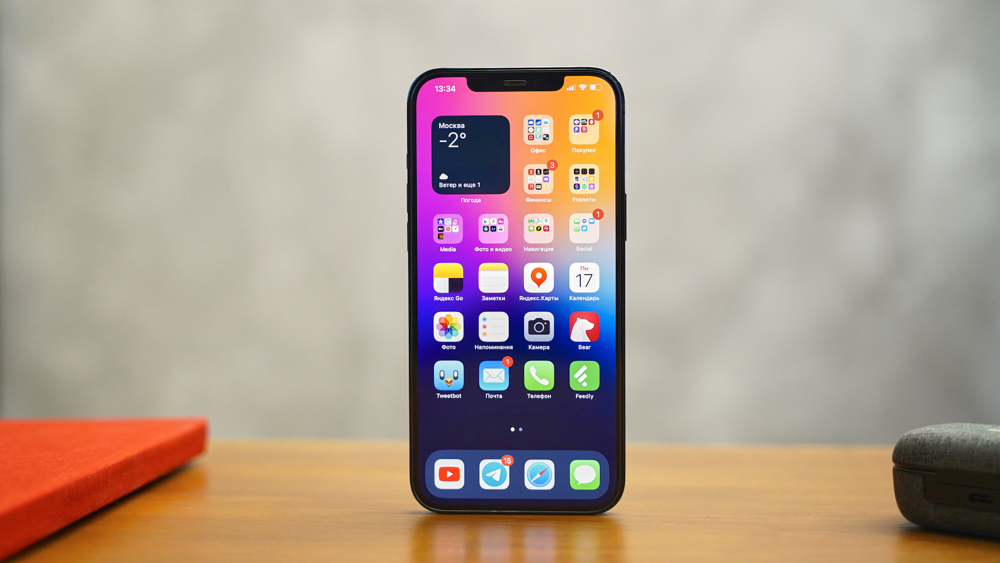
Батарея
Поначалу я был в полном восторге, iPhone 12 Pro Max работал очень долго. Конечно, и его можно за день посадить, но это совсем жёсткие сценарии использования вроде шести часов использования навигатора с подсветкой на максимуме. В остальных случаях он спокойно доживал до вечера с 30-40 % заряда аккумулятора и 4-5 часами свечения экрана. То есть в сумме за пару суток получалось около 8-9 часов, что, по моим меркам, просто нереальные показатели для айфона.
Но спустя пару месяцев я заметил, что телефон начал работать меньше — выходило всего около шести часов экрана за день с теми же настройками устройства, что и раньше. Я начал обвинять в своих бедах оператора, добавил eSIM второй карточкой — лучше не стало. Выключил основную — то же самое. Потом улетели в августе в Турцию, там тоже была связка из eSIM для интернета и основной номер для разговора. К моему удивлению, телефон вновь работал долго.
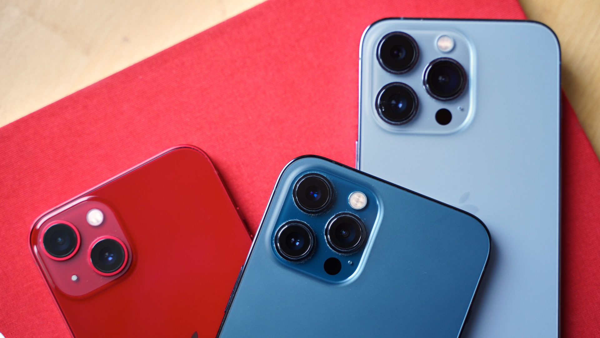
Может, какое-то из iOS-обновлений исправило проблему. А может и нет, но счастье длилось не так уж и долго. После возвращения в Москву я накатил финальную iOS 15, всё стало снова не очень здорово. Причём для эксперимента я купил ещё один 12 Pro Max — показатели аналогичные. Спросил у жены, как дела с её «прошкой» — она тоже не в восторге, постоянно использует энергосберегающий режим, чтобы телефон доживал до вечера.
В итоге осенью я попробовал iPhone 13 и 13 Pro, увидел, что они выдают такие же результаты, как и 12 Pro Max: на практике получаются те же 6 часов экранного времени в сутки, что и на большом телефоне. Не буду перечислять все эксперименты с отключением функций, экспериментов с SIM-картами разных операторов и прочие мучения. Могу лишь сказать, что до выхода iOS 15 телефон работал дольше, а с выходом новой версии вся магия пропала.
От камеры хочется большего
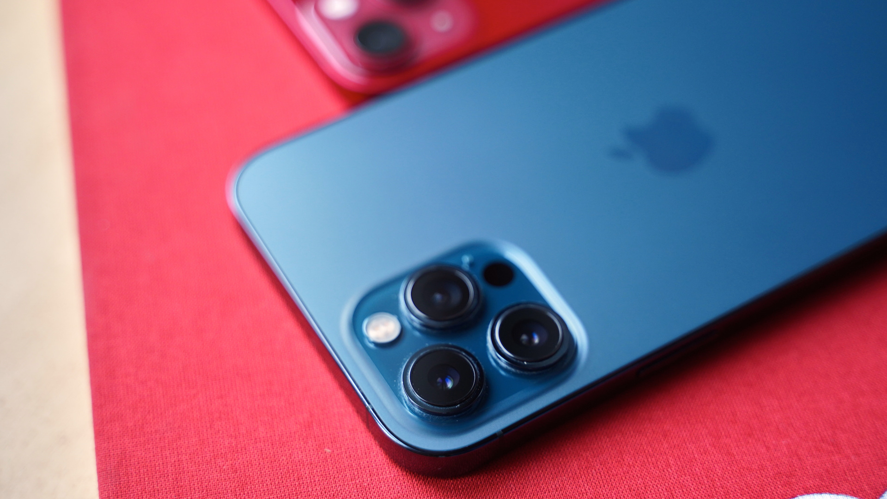
Зато я сравнил на практике 2,5-кратный оптический зум на 12 Pro Max и 3-кратный на 13 Pro. Хочу сказать одно: верните как было! Новый телевик потерял в светосиле, работает непредсказуемо и фактически я им не пользуюсь. А вот в iPhone 12 Pro Max опциональная камера показала себя лучше и выручала при съёмке.
Относительно качества снимков та же песня: с каждым поколением камеры всё лучше отрабатывают ситуации при недостаточном освещении, однако почувствовать кардинальную разницу в снимках между 11 Pro, 12 Pro Max и 13 Pro будет сложно.
Зарядка
В комплекте с телефоном зарядного устройства нет, получаем только кабель. Про блоки питания я рассказывал неоднократно, тут актуальные устройства: выбираем лучшую зарядку для iphone 13
Больше всего мне нравится 100-ваттная GaN-зарядка Ugreen, она с тремя портами USB Type-C для быстрой зарядки и одним разъёмом USB Type-A, к нему удобно подключать кабель для Apple Watch.
В iPhone 12 Pro Max есть поддержка MagSafe. Как по мне, беспроводная зарядка в её нынешнем виде — штука бестолковая. Всё равно нужен проводной адаптер, чтобы эта самая беспроводная зарядка работала. И к чему тут промежуточное звено, не понимаю: проще использовать более мощный и быстрый блок.
Сколько памяти
Для iPhone 12 Pro Max предлагается три варианта памяти: на 128, 256 или 512 ГБ. В идеале нужно брать телефон на 512 ГБ, если активно пользуетесь камерой. Но тут такое дело, что со временем и этого объёма будет мало, нужно регулярно удалять неудачные дубли и бракованные ролики. Поэтому я спокойно укладываюсь в 256 ГБ — а вот версии с базовыми 128 ГБ, как мне видится, будет маловато.
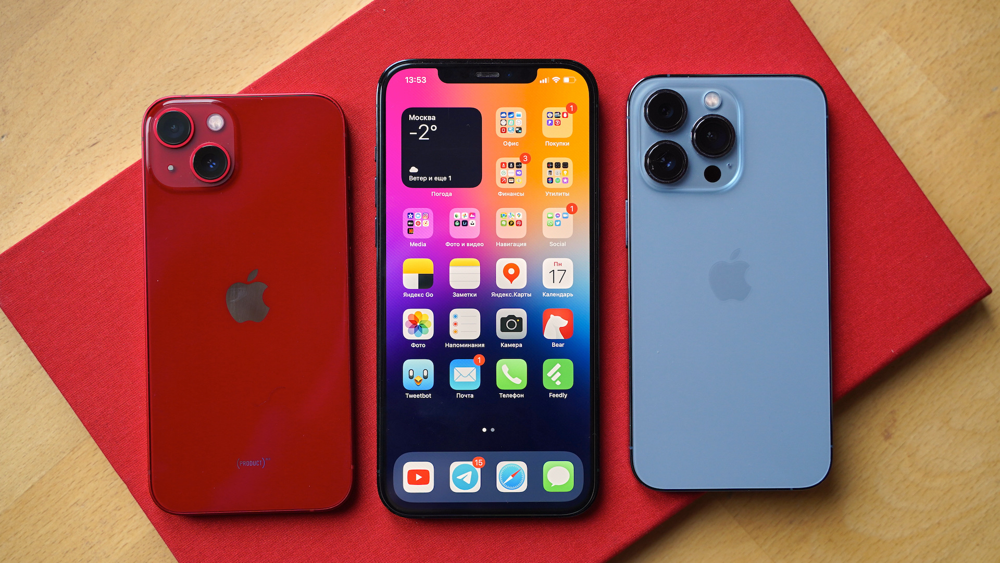
Но есть такая штука, как iCloud, где можно взять много места по подписке. Правда, очень неудобно, что у Apple объём iCloud ограничен: есть 50 ГБ, есть 200 ГБ, а дальше уже сразу 1 ТБ. Но почему нет промежуточных вариантов на 500 или 700 ГБ? Ведь разница в цене существенная: подписка на 200 ГБ стоит 149 рублей в месяц, а за 1 ТБ уже 599 рублей. В итоге я себе взял Apple One со всеми сервисами — мало чем пользуюсь, но оптом дешевле.
Переезжаем со старого телефона
В целом процесс перемещения данных со старого айфона на новый предельно простой. Нужно оставить старый телефон рядом с новым и запустить процесс переноса накопленного добра. В теории всё звучит просто, но по факту дело идёт не очень быстро и затягивается на пару часов. Вдобавок процесс переподключения Apple Watch от старого айфона к новому добавляет нервотрёпки. То телефон часы не видит, то процесс сам по себе тормозит.
В общем, хочется какого-то бесшовного переезда, чтобы оставить старое и новое устройство рядом, а потом магически переехать без лишних телодвижений. К сожалению, пока всё не так гладко.
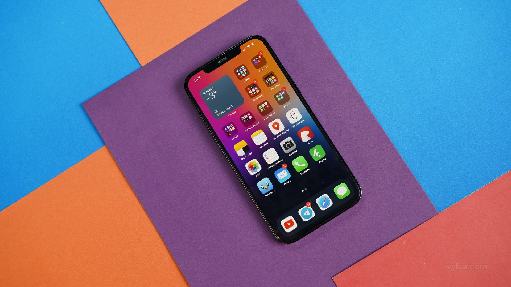
Сколько стоит
На момент выхода текста iPhone 12 Pro Max со 128 ГБ памяти можно купить за 90 000 рублей, это будет «серый» смартфон без официальной гарантии, а «белый» обойдётся тысяч на десять рублей дороже. При этом если немного добавить, то уже за 92-93 тысячи рублей можно купить «серый» 13 Pro Max на 128 ГБ — и смысл покупки прошлогодней модели не понятен.
Спорные впечатления
Вообще, изначально я планировал текст в духе «две недели с новым айфоном» и частично написал впечатления. Шло время, и пара недель превратилась в месяц, потом в два. Затем пролетело лето, осенью Apple показала новые айфоны и с 12 Pro Max я думаю расстаться, отправив его на хранение в шкаф.
Первоначально я был очень доволен телефоном. Для меня апгрейд с «обычного» айфона на «макс» оказался эпохальным событием — нечто подобное я испытывал много-много лет назад, когда Apple выпустила iPhone 6 Plus и я наслаждался огромным дисплеем относительно старого iPhone 5s.
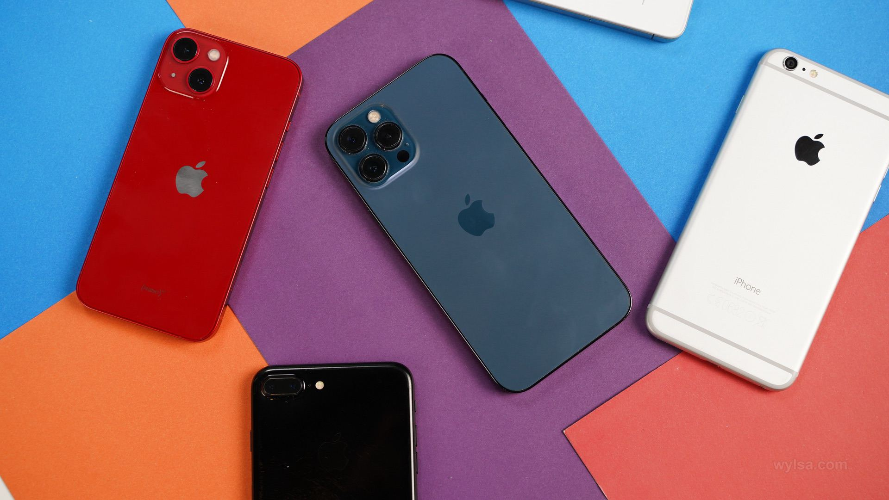
Но радость сменилась разочарованием — и всё из-за показателей автономности. У меня большой iPhone 12 Pro Max работает столько же, сколько и iPhone 12 или iPhone 13 Pro. Отсюда и следует заключение: зачем привыкать к неудобным размерам, если те же результаты выдают устройства более комфортного формата?
От iPhone 12 Pro Max я ожидал не так уж и много: была надежда, что телефон с большой батарейкой и большим экраном станет компромиссной заменой для iPad. Но этого не произошло.